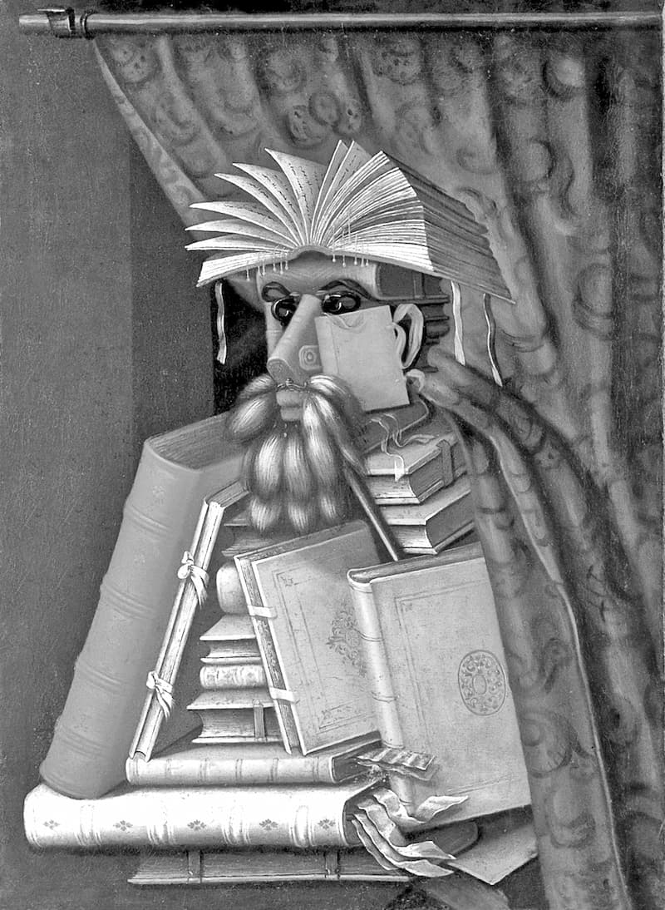

„Să scrie pe tablele tale doar degetul lui Dumnezeu! Pregătește pentru acest scriitor minte și inimă curată, viețuind cu evlavie și întreagă înțelepciune; atunci, rugîndu-te tu și citind sfințitele cărți, fără să bagi de seamă și în chip tainic se va scrie pe tablele sufletului tău legea Duhului.”
Cartea și școala
Scurt zis, scopul și rațiunea de a fi a școlii este acela de a-i învăța „carte” pe cei neștiutori, deci mai ales pe copii, prin „carte” înțelegîndu-se suma cunoștințelor păstrate prin scris. Și anume a căror cunoștințe? A celor după om, după mintea lui căzută și înșelată de diavol încă din început. Cunoștințe care sînt nu doar mincinoase (și deci dăunătoare), ci și cu totul de prisos, de vreme ce Dumnezeul și Făcătorul a toate ne-a făcut cu suflet cugetător și ne-a dat întreaga știință pe cît ne era și ne este de folos nouă. Căci să ne gîndim la înțelepciunea dintru început a lui Adam, atunci cînd a numit nenumăratele soiuri de pietre, plante și animale, pe fiecare cu numele său, ceea ce înseamnă că acel nume cuprindea în sine toate trăsăturile proprii acelei făpturi sau acelui lucru. (Nici o știință a cunoașterii lumești de azi nu ar putea face așa ceva: de pildă, dacă ar fi să înfățișeze desăvîrșit fie și un singur microb, biologia s-ar strădui în zadar și ar umple lumea de cărți fără să afle ce este acea bicisnică făptură.) Dumnezeu nu ne-a lăsat întru neștiință nici după căderea strămoșului, ci ne-a povățuit prin Patriarhi și prin Prooroci, iar apoi prin Însuși Fiul Său întrupat și prin Sfinții Acestuia către cunoașterea nu numai a celor văzute, dar (în parte) și a negrăitelor taine cerești. Și toate aceste cunoștințe au ajuns pînă la noi scrise în sfintele Sale Scripturi (între care se cuprind nu numai Cărțile Vechiului și Noului Testament, ci toate scrierile insuflate de Dumnezeu-Duhul Sfînt Sfinților Părinți ai Bisericii).
De cealaltă parte, urîtorul de oameni diavol și-a urmat reaua sa lucrare începută în clipa cînd a amăgit-o pe Eva, sporindu-și peste măsură învățăturile sale mincinoase, pe care de la o vreme le propovăduiește (prin cărțile numite „manuale școlare”) în chip sistematic, general, obligatoriu, gratuit și fără frontiere, lucru care nu s-a mai întîmplat niciodată și nicăieri pînă la zisul „iluminism” european ieșit la iveală în veacul al XVIII-lea. Căci asta e școala așa cum o știm: o instituție a Statului antihristic născocită anume pentru a strica mințile tuturor oamenilor (și mai ales ale celor botezați), făcîndu-i să gîndească și să lucreze toți în același fel și pentru un singur scop: întemeierea împărăției Antihristului celui mare și încoronarea acestuia ca împărat al lumii.
Puterea cărților
Cunoașterea Scripturilor insuflate de Dumnezeu este negrăit de folositoare: nu numai că luminează mintea, liniștește sufletul și ne îmbunătățește traiul de zi cu zi, dar e de-a dreptul mîntuitoare, fiincă aduce din nou mintea la vrednicia ei firească, aceea de stăpînitoare a trupului și a patimilor acestuia. Pe de altă parte, adevărurile acestei cunoașteri sînt neplăcute sufletului nostru pătimaș, căci ne smeresc mîndria, îndreptățirea și iubirea de sine și ne mustră pentru răutatea noastră, aducîndu-ne aminte de judecata și de pedeapsa lui Dumnezeu.
Iar cunoștințele cele mincinoase și hulitoare lucrează tocmai dimpotrivă: ne strică mintea în chip desăvîrșit, ne tulbură sufletul, ne păgubesc trupește (să ne gîndim că toate „descoperirile științifice” duc într-un fel sau altul la nimicirea vieții), ne îndepărtează de Dumnezeu și ne dau cu totul în stăpînirea învățătorului Satana. Dar noi le primim cu bucurie, căci ele ne măgulesc mîndria și ne dau smintita nădejde că putem păcătui fără teama de judecată și de pedepse (adică ne ucid conștiința, acest simț dumnezeiesc și mîntuitor). Căci așa lucrează vrăjmașul diavol: învelește otrava în învelișul dulce al minciunii și vopsește unealta uciderii în cele mai atrăgătoare culori. Aceasta este magia! De aceea, cei mai mulți dintre noi avem o evlavie altfel de neînțeles pentru cărți, fără să judecăm răul pe care îl închid între scoarțele lor. Dar să citim ce zice despre „carte” însăși școala:
„Cartea reprezintă: a) principalul instrument al cunoașterii; b) oglindă a valorilor spirituale; c) mijloc de informare, instruire și cultură. […] Pornind de la sensurile termenului «cultură» menționate în caseta alăturată, explicați importanța cărții ca obiect cultural. Prin cultură, se poate înțelege: a) totalitatea valorilor spirituale create de omenire; b) faptul de a poseda cunoștințe variate în diferite domenii; totalitatea acestor cunoștințe; nivel (ridicat) de dezvoltare intelectuală la care ajunge cineva” (ROM7).
Tălmăcirea ortodoxă a acestor ziceri este aceasta: cartea (umanistă) este catalog al rătăcirilor, înșelărilor și amăgirilor bolnavei rațiuni a omului căzut; antologie a minciunilor născocite de umaniștii veacurilor și propovăduite de „Iluminiști”; ladă de gunoi a netrebnicelor cugetări și simțăminte care s-au adunat straturi-straturi și au înălțat muntele trufiei omenești. Cartea (umanistă) este într-adevăr o oglindă a lumii; atîta doar că, în apele sale înșelătoare, oglindește pe dos lumea, mințind împotriva adevărului punct cu punct! Și încă mai mult: este o oglindă strîmbă, care minte și pe lîngă adevăr, nălucind forme nebănuite și schimbînd mărimile. De aceea oglinda e o unealtă vrăjitorească și la fel e cartea umanistă, „obiectul cultural” tipărit, acea unealtă vrăjitorească a kabbaliștilor francmasoni, prin care minciuna e preschimbată în adevăr și adevărul în minciună, în nebuneasca strădanie de a rescrie trecutul și viitorul așa cum sînt înfățișate în Sfintele Scripturi și de a rezidi lumea după gîndul Marelui lor Arhitect! Întruchiparea acestei spurcate scripturi umaniste „universale”, adică vas al tuturor mincinoaselor necurății cărturărești drăcești, a acea Enciclopedie sau Dicționar rațional al științelor, artelor și meșteșugurilor, cunoscută pe scurt ca Enciclopedia Franceză, rod al smintelii cumpliților Iluminați (următori ai lui Lucifer, fostul purtător de lumină). Enciclopedia e adevărata biblie după Satana, păstrătoare a „cunoașterii ascunse”, ale cărei capitole, desfăcute din cotorul lor cel unu și tipărite osebit, stau la obîrșia tuturor cărților de învățătură, a manualelor școlare din întreaga lume, după cum ne spune însuși numele: „enciclopedie”=gr. en „în”, kyclos „cerc” și paideia „educație”, „învățămînt”. „Crezul” enciclopedist e propovăduit la începutul fiecăreia din aceste blestemate cărticele prin care copiii sînt îmboldiți spre iscodirea părutelor „taine” și împinși pe drumul rătăcitor al dăunătoarei cunoașteri mincinoase. De pildă:
„Manualul de față te va ajuta să observi cu mai multă atenție ceea ce se întîmplă în jurul tău, să-ți pui întrebări și să cauți răspunsuri. El este o parte din marea carte a naturii. Descoperă-i tainele! Succes!” (STI4). Manualul – „parte a cărții naturii”! E o tîmpenie, firește, dar dincolo de ea se întrevede hula panteistă împotriva Ziditorului și a sfintei Sale Evanghelii, care sînt înlocuiți cu zeița „Natură”, mama vieții, și cu o așa-zisă „biblie” naturală, ce trebuie tălmăcită și tîlcuită micilor inițiați umaniști. Și asta nu e nimic! Hărtănitele volume sînt chiar ipostasul duhului cel viclean, al șarpelui cel lingușitor, care, dintre scoarțele pestrițe, vorbește el însuși copiilor, ispitindu-i față către față cu păruta sa atot-știință:
„Dragul meu prieten, în lumea în care trăiești se întîmplă multe lucruri despre care ți-ai pus cu siguranță întrebări. De ce se întîmplă toate astea? De ce? De ce răsare soarele? Ce sîntem noi, oamenii? Acum poți, dragul meu prieten, să afli răspuns la aceste întrebări. Răsfoiește-mă! Apoi, după ce ai alergat cu gîndul prin toate pozele pe care le vei vedea, potolește-ți nerăbdarea și pornește la drum. Împreună, ne vom întreba unul pe altul și ne vom răspunde. Cu dragoste, Manualul tău de Științe” (STI3). Copilul e împresurat de asemenea mieroși „prieteni” de hîrtie. Nu scapă de unul, că e luat în primire de altul, care se arată și el gata a-l călăuzi pe drumul „mîntuirii”, sîsîind și fonfănind făgăduințe ce duhnesc de departe a pucioasă, catran și înșelătorie: „Prietene, te afli la vîrsta întrebărilor. Te întrebi cine ești, ce se întîmplă în jurul tău, de ce? Eu, Manualul de Educație Civică, te voi ajuta să găsești răspuns la multe dintre întrebările tale” (EDC3).
„Eu, Manualul”! Paranoicul panteism/animism al acestor înainte-cuvîntări, pilde ale pedagogiei satanice, este lămurit și întărit prin lecții osebite. Astfel, în clasa a 3-a, copiilor li se cere să fie cu băgare de seamă și să nu „rănească” sau să „ucidă” kakografiile tipărite: „Nu uitați! Și cărțile au suflet!” (ROM3). Iar trei ani mai tîrziu sînt puși să citească o scriere foarte serioasă a unui serios „critic literar” (?), anume „«Cărțile au suflet», de Nicolae Manolescu” (ROM6). Lecția e împodobită și ilustrată cu poza înfiorătorului Bibliotecar al maestrului Arcimboldo, desăvîrșită icoană a dracului cărturăriei, „sufletul cărților”, al cărui chip e plăsmuit din tomuri și unelte de scris!

Dar nicăieri nu se întrevăd mai bine țelurile cărturărești ale diavolului și ale ucenicilor săi, francmasonii kabbaliști, decît în nălucirile unui vestit mag apocaliptic, Michael Ende („ende”=„sfîrșit”, „încheiere”), a cărui „Poveste fără sfîrșit” e cercetată cu pioșenie în România de a 5-a. (De ce la limba română? Fiindcă doar aici puteau să o facă.) Acolo, ni se istorisește cea mai însemnată dintre peripețiile unui ochelarist băiețel vrăjitor, care găsește la anticar (însuși Satana în chip de bunic sfătos), după îndelungă rătăcire „inițiatică”, acel volum pe care îl căuta: „Se uita țintă la titlul cărții, simțind cum îl lua ba cu frig, ba cu cald. Da, asta era, la asta visase de atîtea ori și asta își dorise de cînd fusese cuprins de pasiunea sa: o poveste care să nu se mai sfîrșească niciodată! Cartea tuturor cărților!” (ROM5). Vedeți hula? Vedeți gîndul tainic și nerușinarea cu care e maimuțărită Biblia, „Cartea”, singura fără de început și fără de sfîrșit, prin care vorbește Însuși Dumnezeu-Cuvîntul?! Pilda aceasta ne luminează deplin înțelesul ascuns al alcătuirii Enciclopediei, piscul trufașei și mincinoasei cugetări omenești!
În același manual, „stră-văzătorul” orb Jorje-Louis Borges vorbește descoperit despre raiul cultural, cu ale cărui desfătări ne amăgește vicleanul pierzător al neamului omenesc și fiii săi duhovnicești, umaniștii: „«Eu mi-am imaginat întotdeauna Paradisul sub forma unei biblioteci. Alte persoane consideră că ar fi o grădină, alții și-l pot închipui ca un palat, eu l-am imaginat întotdeauna ca o bibliotecă.» J.-L. Borges, «Cărțile și noaptea»” (ROM5). Așa-zisa carte de „română” nu îi spune însă micului cărturar și fariseu din clasa a 5-a că satanistul Borges își închipuia „biblioteca-paradis”, plină cu toate cărțile lumii1, ca pe un labirint clădit în formă de turn babilonic, așa cum citim în povestirea sa „Biblioteca Babel”. Acolo, maestrul ne vorbește lămurit despre drăceasca trufie a templului ideal francmasonic, cît și despre „inițierea” în dedalicele întortocheri ale „drumului spiritual”. De unde tragem încheierea că „raiul cultural” e o cursă amăgitoare, un loc al pierzării sufletului mai primejdios decît „raiul trupesc” închipuit de cîrciumă și de casa de curve, alte două instituții ale statului umanist (de care nu avem loc a ne ocupa aici).
Orice carte umanistă este așadar o împotrivire maimuțărească împotriva Sfintelor Scripturi, urmărind împingerea lor în groapa uitării, sub muntele de minciuni imprimate la teasc. Iar noi, zișii „ortodocși” luminați de lumina Sfîntului Botez și povățuiți de lumina Sfintei Scripturi, ne spurcăm mintea cu orice tipăritură prinsă în coperți, la fel ca păgînii și ca necredincioșii Iudei. De mirare lucru! Cum se poate atîta nesimțire? Sfîntul Episcop Ignatie Briancianinov ne întreabă: „Spune-mi, cum este cu putință să-ți îngădui a citi orice carte, cînd fiecare carte pe care o citești te poartă încotro voiește ea, te înduplecă să crezi în tot lucrul pentru care îi face trebuință încuviințarea ta, să te lepezi de tot ce are ea nevoie să te lepezi?” (IGN1). Pricinile sînt mai multe. Întîi și întîi, pentru că „ortodoxia” noastră e mîncată de viermele idolatriei. Astfel, înainte de a ne întreba ce cuprinde o grămadă oarecare de foi adunate între două doage, noi vedem într-însa idolul cărții, în fața căruia ne închinăm și aducem jertfă de laudă fiindcă așa am fost dresați în clasa a 3-a: „Carte frumoasă, cinste cui te-a scris!” (ROM3)
Orice om neștiutor de carte dar urîtor de idoli și închinător la singur Dumnezeul cel în Treime slăvit este „cultivat” prin smerita ascultare și înțelegere a Evangheliilor, pe cîtă vreme trufașa idolatrizare a cărților e semn de analfabetism al duhului. Oamenii cinstesc „taina” hîrtiilor încopertate tocmai pentru că nu le pricep în adîncime, dar și pentru că acestea le hrănesc și le îndreptățesc patimile. În acest chip, noi și înaintașii noștri din generațiile iluministe am împlinit cuvîntul apostolului: „Va fi o vreme cînd învățătura cea sănătoasă nu o vor primi, ci după poftele lor își vor alege loru-și învățători să le răsfețe auzul; și de la adevăr își vor întoarce auzul, iar către basme se vor pleca” (2 Timotei 4:3-4). De aceea, nebunia cărturăriei cu orice preț nu cunoaște hotare. Acum două veacuri de pildă, dorința de a părea învățați după înțelepciunea lumească (franțuzească atunci) îi făcea pe ciocoii (slujbașii Statului) veniți la putere să-și împodobească pereții casei cu biblioteci pline cu… cotoare de cărți, care îmbrăcau doar niște cutii de carton. Cei mai puțin avuți își pictau „biblioteca” de-a dreptul pe perete! Ce să-i faci? Cînd se înveșmîntează între două cartoane purtînd nume de autor, titlu, siglă de editură, atunci nebunia, prostia, viclenia, hula, pornografia poartă numele de cultură, iar obiectul „carte” devine „sacru”. Drept e că, dacă ai „carte”, ai și „parte”: întîi de toate, ai parte de odihnă trupească, fiindcă nu mai ești silit să muncești; apoi, de slavă deșartă, care hrănește trufia, fiind mai dulce și mai sățioasă decît mana și mai răcoritoare ca uleiul pe bubă. În schimb, nu trebuie decît să-ți înăbuși mintea, sufletul rațional și viu în vecie, lepădîndu-te de smerita cugetare și, odată cu ea, de Adevăr, adică de Hristos.2
Paza de învățătura cea mincinoasă
„Oarecînd, prin lucrarea unei descoperiri dumnezeiești, Sfîntul Antonie cel Mare a văzut cursele diavolului întinse prin toată lumea, ca să-l vîneze pe om spre pierzare. Văzînd mulțimea nenumărată a acestor curse, cu plîngere L-a întrebat pe Domnul: «Doamne, cine oare poate scăpa de cursele acestea și să se mîntuiască?» Pentru mintea mea, sînt răspîndite curse în felurite cărți care se numesc pe sine «lumină», dar cuprind învățături ale întunericului, scrise sub înrîurirea vădită sau ascunsă a întunecatului și atot-răului stăpînitor al lumii acesteia, avînd ca izvor înțelegerea vătămată de căderea în păcat, «întru minciuna omenească, întru viclenia meșteșugirilor înșelăciunii» (Efeseni 4:14), cărți scrise de scriitori care «fără de minte se înfierbîntă din mintea trupului lor» (Coloseni 2:18). Mintea mea, la rîndul ei, poartă pecetea căderii, este acoperită cu acoperămînt de întuneric, molipsită de otrava minciunii. Încă din Rai tindea ea, cu nesocotință și nebăgare de seamă, către dobîndirea cunoștinței pierzătoare și ucigătoare! Iar după cădere s-a făcut încă mai nechibzuită, mai cutezătoare: cu îndrăzneală se îmbată din paharul cunoștinței otrăvite, și prin aceasta nimicește în sine cu desăvîrșire gustul și dorirea de paharul cel dumnezeiesc al cunoștinței mîntuitoare. […] Mă uit la lume și văd: cursele diavolului s-au înmulțit față de vremurile de început ale Bisericii lui Hristos, s-au înmulțit peste măsură. S-au înmulțit cărțile care cuprind învățături mincinoase […]” (IGN7).
De aceea, Sfinții Părinți și Dascăli ai Bisericii ne opresc hotărît de la cercetarea scrierior neortodoxe. Să-l ascultăm tot pe dumnezeiescul Ignatie Briancianinov, care glăsuiește parcă anume sufletelor noastre secătuite de apostazia raționalistă a acestui veac: „Iarăși îți aduc, fiu credincios al Bisericii de Răsărit, cuvînt de sfat nemincinos și bun. Acest cuvînt nu e al meu: este cuvîntul Sfinților Părinți. Păzește-ți mintea și inima de învățătura mincinoasă!” (IGN1) „Să ne depărtăm, ca de o otravă omorîtoare, de cărțile scrise dintr-un izvor puturos și tulbure, din rațiunea cea cu nume mincinos – această moștenire a firii omenești căzute, ce prin căderea ei s-a apropiat de îngerii căzuți. «Ca să nu mai fim prunci – ne îndeamnă Apostolul – învăluindu-ne și purtîndu-ne de tot vîntul învățăturii, întru minciuna oamenilor, întru vicleșugul lor, spre uneltirea înșelăciunii» (Efeseni 4:14)” (IGN2). „«Nimeni să nu citească – a spus Sfințitul Mucenic Petru Damaschinul – cele ce nu slujesc spre a bine-plăcea lui Dumnezeu. Iar dintre cele potrivnice acestora, nimic să nu citească! Ce trebuință este de a primi duh necurat în loc de Duh Sfînt? Fiindcă omul primește însușirea cuvîntului cu care se îndeletnicește, chiar dacă cei necercați nu văd acest lucru așa cum îl văd cei care au cercare duhovnicească.»” (IGN1). Să ținem așadar seama că „cel ce citește cărțile dascălilor mincinoși intră negreșit în părtășie cu duhul viclean și întunecat al minciunii. Lucrul acesta să nu ți se pară ciudat și de necrezut. Căci adevărul se află doar în tovărășia Duhului Sfînt; El este Duhul Adevărului. Minciuna o însoțește și o ajută duhul diavolului, care este minciună și părintele minciunii” (IGN1).
Citind mai departe învățătura acestui Sfînt Părinte, înțelegem acum de ce sînt fericiți săracii cu Duhul, și mai cu seamă pruncii cei feciorelnici cu mintea și cu trupul pe care noi, părinții, nu știm cum să-i împătimim mai repede, școlindu-i: „Dacă în mintea și în sufletul tău nu este scris nimic, Adevărul și Duhul să scrie în ele poruncile lui Dumnezeu și învățătura Lui duhovnicească! Iar dacă ți-ai îngăduit a-ți mîzgăli de tot tablele sufletului cu felurite cugetări și întipăriri neduhovnicești – fără a lua aminte cu înțelepciune și fereală cine e scriitorul, ce scrie el – curăță cele scrise de scriitori străini, curăță prin pocăință, prin lepădarea a tot ce este împotrivitor de Dumnezeu și prin citirea dumnezeieștilor Scripturi” (IGN1).
Vrei să fii adevărat cărturar, adevărat iubitor și căutător al Adevărului, Care e totuna cu Înțelepciunea? Dumnezeiasca Scriptură îți dă întreaga învățătură a tuturor științelor, iar Evangheliile sînt meșteșug al meșteșugurilor. De aceea, „străduiește-te să-ți însușești Evanghelia cu mintea și cu inima, încît mintea ta să trăiască în ea; atunci și lucrarea ta va deveni cu înlesnire lucrare evanghelică. Poți să reușești asta citind cu evlavie, cercetînd cu de-adinsul Evanghelia. De ce în vremurile de acum dascălul creștin nu ar împodobi ținerea de minte a copilului nevinovat cu Evanghelia, în loc s-o murdărească prin învățarea fabulelor lui Esop și a altor nimicuri?” (IGN1).
Iar după Sfintele Scripturi urmează Sfînta Predanie, așadar cărțile insuflate de Sfîntul Duh al Dumnezeu-Cuvîntului Sfinților Părinți ai Bisericii:
„Însușește-ți gîndirea și duhul Sfinților Părinți prin citirea scrierilor lor. Sfinții Părinți au atins țelul: mîntuirea. Și tu vei atinge acest țel prin mersul firesc al lucrurilor. Fiind într-un cuget și într-un suflet cu Sfinții Prinți te vei mîntui. Toate scrierile Sfinților Părinți sînt alcătuite sub insuflarea sau înrîurirea Sfîntului Duh. Minunată este împreună-glăsuirea lor, minunată este ungerea lor de sus! Cel care se călăuzește după ele are drept călăuză pe Duhul Sfînt. Toate apele pămîntului se revarsă în ocean și poate că oceanul este izvorul tuturor apelor pămîntului. Toate scrierile Părinților se reunesc în Evanghelie, toate amintesc de ea, ca să ne învețe a împlini întocmai poruncile Domnului nostru Iisus Hristos; izvorul și sfîrșitul lor, al tuturor, e Sfînta Evanghelie” (IGN1).
Adevărul acestor ziceri se vădește cu prisosință în anii noștri. Căci marele cîștig de după 1989 nu au fost în primul rînd cele peste o mie de bisericil ridicate între timp! Cine și ce se va sluji în ele, odată ce ecumenismul apostat e „religie” oficială? Nu, cîștigul sînt miile de cărți ale de Dumnezeu insuflaților Părinți ai Bisericii, care s-au tălmăcit și s-au răspîndit, și pe care Antihristul nu le mai poate desființa prin nici o lege! În ele este adevărata știință, adevărata „cultură”, „arta” cea adevărată a mîntuirii. Acestea trebuie citite, învățate și puse în lucrare de cei ce vor să ajungă Creștini și să-și izbăvească sufletele. De cei care sînt în stare, căci nu toți pot să fie cărturari, așa cum vrea nebunia nivelatoare a „iluminismului”, care îndobitocește copiii și scoate generații după generații de netrebnici și bolnavi: mulți idioți, nenumărați analfabeți, însă „cu diplome”! Oameni fără cap, akefali, dar trufași! Cei fără multă minte se vor mîntui cu Tatăl nostru, dacă vor avea credință și smerită cugetare. Ei vor moșteni Împărăția cerurilor înaintea învățaților înalți cu gîndul, care ar putea și ar trebui să citească în „marea carte a naturii” rațiunile dumnezeiești, dar nu o fac, din multa lor răutate. Tuturor acestor „învățători” neînvățați și călăuze oarbe, precum și celor îndrumați de ei, spre osîndă le va fi deșarta lor iscodire, „căci nu este în gura lor adevăr, inima lor este deșartă. Groapă deschisă gîtlejul lor, cu limbile lor vicleneau” (Psalmul 5:10, 11). Căci – așa cum învață Sfîntul Episcop Ignatie Briancianinov – „marea carte a naturii este pecetluită pentru cititorii necurați, întunecați de păcat, robiți păcatului, cufundați în plăcerile trupești, împresurați, încețoșați de împrăștierea deșartă” (IGN2).
Și, ca să scurtăm, porunca e aceasta: „Să scrie pe tablele tale doar degetul lui Dumnezeu! Pregătește pentru acest scriitor minte și inimă curată, viețuind cu evlavie și întreagă înțelepciune; atunci, rugîndu-te tu și citind sfințitele cărți, fără să bagi de seamă și în chip tainic se va scrie pe tablele sufletului tău legea Duhului.” (IGN1).
BIBLIOGRAFIE:
(ROM7) – LIMBA ROMÂNĂ, manual pentru clasa a 7-a, Corint, 2000
(STI4) – ȘTIINȚE, manual pentru clasa a 4-a, Aramis, 1996
(STI3) – ȘTIINȚE, manual pentru clasa a 3-a, Aramis, 2002
(EDC3) – EDUCAȚIE CIVICĂ, manual pentru clasa a 3-a, 2002
(ROM3) – LIMBA ROMÂNĂ, manual pentru clasa a 3-a, Petrion, 2002
(ROM6) – LIMBA ROMÂNĂ, manual pentru clasa a 6-a, Editura didactică și pedagogică, 1998
(ROM5) – LIMBA ROMÂNĂ, manual pentru clasa a 5-a, Humanitas, 2001
(IGN1) – Sfîntul Ignatie Briancianinov, Experiențe ascetice, vol. 1, Sofia, 2000
(IGN7) – Sfîntul Ignatie Briancianinov, Despre înșelare, Schitul Lacu, 1999
(IGN2) – Sfîntul Ignatie Briancianinov, Experiențe ascetice, vol. 2, Sofia, 2000
Note
1 Smintitul gînd este pus acum în lucrare de către francmasonul guvern american, la Biblioteca Congresului din Washington.
2 E de ajuns să zici că pămîntul are mai mult de 7518 ani, sau că se mișcă și soarele stă, sau că omul se trage din maimuță, și numaidecît te-ai despărțit de Dumnezeu, fiindcă nu ai primit adevărurile descoperite de El în Sfînta Scriptură.
Comentarii